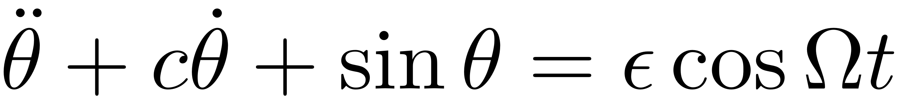
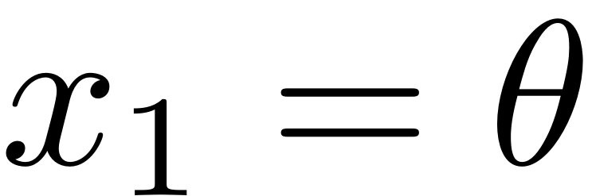
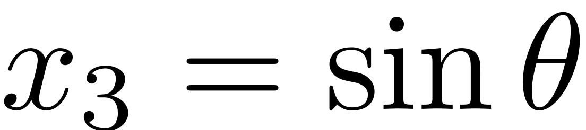
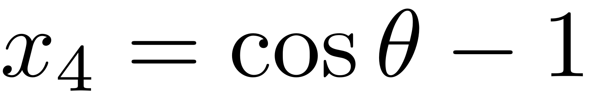
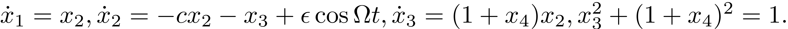
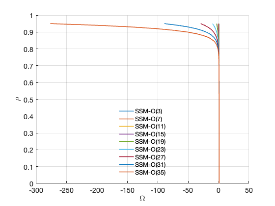
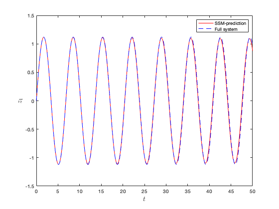
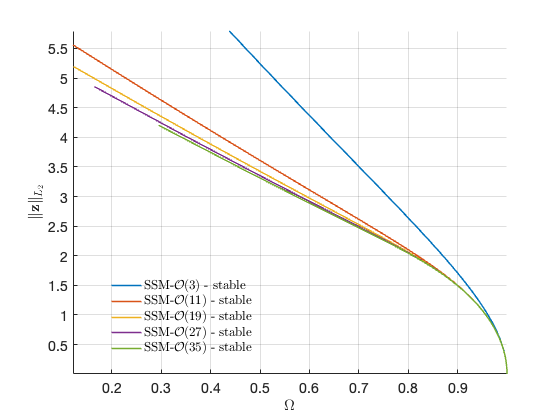
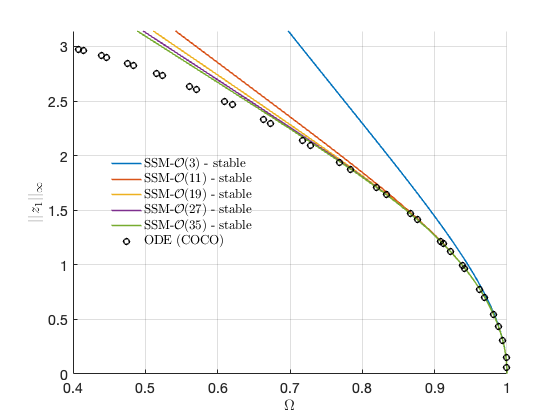

<!DOCTYPE html
  PUBLIC "-//W3C//DTD HTML 4.01 Transitional//EN">

<html><html><body><div class="banner"><a href="../../../../index.html"></a></div></body></html><head>
<meta content="text/html; charset=utf-8" http-equiv="Content-Type"/>
<!--
This HTML was auto-generated from MATLAB code.
To make changes, update the MATLAB code and republish this document.
      --><title>Pendulum with algebraic differential equation</title><meta content="MATLAB 9.14" name="generator"/><link href="http://purl.org/dc/elements/1.1/" rel="schema.DC"/><meta content="2023-09-02" name="DC.date"/><meta content="Pendulum.m" name="DC.source"/><style type="text/css">
html,body,div,span,applet,object,iframe,h1,h2,h3,h4,h5,h6,p,blockquote,pre,a,abbr,acronym,address,big,cite,code,del,dfn,em,font,img,ins,kbd,q,s,samp,small,strike,strong,tt,var,b,u,i,center,dl,dt,dd,ol,ul,li,fieldset,form,label,legend,table,caption,tbody,tfoot,thead,tr,th,td{margin:0;padding:0;border:0;outline:0;font-size:100%;vertical-align:baseline;background:transparent}body{line-height:1}ol,ul{list-style:none}blockquote,q{quotes:none}blockquote:before,blockquote:after,q:before,q:after{content:'';content:none}:focus{outine:0}ins{text-decoration:none}del{text-decoration:line-through}table{border-collapse:collapse;border-spacing:0}

html { min-height:100%; margin-bottom:1px; }
html body { height:100%; margin:0px; font-family:Arial, Helvetica, sans-serif; font-size:10px; color:#000; line-height:140%; background:#fff none; overflow-y:scroll; }
html body td { vertical-align:top; text-align:left; }

h1 { padding:0px; margin:0px 0px 25px; font-family:Arial, Helvetica, sans-serif; font-size:1.5em; color:#d55000; line-height:100%; font-weight:normal; }
h2 { padding:0px; margin:0px 0px 8px; font-family:Arial, Helvetica, sans-serif; font-size:1.2em; color:#000; font-weight:bold; line-height:140%; border-bottom:1px solid #d6d4d4; display:block; }
h3 { padding:0px; margin:0px 0px 5px; font-family:Arial, Helvetica, sans-serif; font-size:1.1em; color:#000; font-weight:bold; line-height:140%; }

a { color:#005fce; text-decoration:none; }
a:hover { color:#005fce; text-decoration:underline; }
a:visited { color:#004aa0; text-decoration:none; }

p { padding:0px; margin:0px 0px 20px; }
img { padding:0px; margin:0px 0px 20px; border:none; }
p img, pre img, tt img, li img, h1 img, h2 img { margin-bottom:0px; }

ul { padding:0px; margin:0px 0px 20px 23px; list-style:square; }
ul li { padding:0px; margin:0px 0px 7px 0px; }
ul li ul { padding:5px 0px 0px; margin:0px 0px 7px 23px; }
ul li ol li { list-style:decimal; }
ol { padding:0px; margin:0px 0px 20px 0px; list-style:decimal; }
ol li { padding:0px; margin:0px 0px 7px 23px; list-style-type:decimal; }
ol li ol { padding:5px 0px 0px; margin:0px 0px 7px 0px; }
ol li ol li { list-style-type:lower-alpha; }
ol li ul { padding-top:7px; }
ol li ul li { list-style:square; }

.content { font-size:1.2em; line-height:140%; padding: 20px; }

pre, code { font-size:12px; }
tt { font-size: 1.2em; }
pre { margin:0px 0px 20px; }
pre.codeinput { padding:10px; border:1px solid #d3d3d3; background:#f7f7f7; }
pre.codeoutput { padding:10px 11px; margin:0px 0px 20px; color:#4c4c4c; }
pre.error { color:red; }

@media print { pre.codeinput, pre.codeoutput { word-wrap:break-word; width:100%; } }

span.keyword { color:#0000FF }
span.comment { color:#228B22 }
span.string { color:#A020F0 }
span.untermstring { color:#B20000 }
span.syscmd { color:#B28C00 }
span.typesection { color:#A0522D }

.footer { width:auto; padding:10px 0px; margin:25px 0px 0px; border-top:1px dotted #878787; font-size:0.8em; line-height:140%; font-style:italic; color:#878787; text-align:left; float:none; }
.footer p { margin:0px; }
.footer a { color:#878787; }
.footer a:hover { color:#878787; text-decoration:underline; }
.footer a:visited { color:#878787; }

table th { padding:7px 5px; text-align:left; vertical-align:middle; border: 1px solid #d6d4d4; font-weight:bold; }
table td { padding:7px 5px; text-align:left; vertical-align:top; border:1px solid #d6d4d4; }


  </style></head><body><div class="content"><h1>Pendulum with algebraic differential equation</h1><!--introduction--><!--/introduction--><h2>Contents</h2><div><ul><li><a href="#3">Setup model</a></li><li><a href="#5">Autonomous SSM</a></li></ul></div><p>Consider a pendulum subject to external harmonic moment, which is governed by</p><p></p><p>Define , ,  and , we have</p><p></p><p>Lyapunov subcenter manifold</p><pre class="codeinput">clear <span class="string">all</span>
c=0.001;
B = diag([1 1 1 0]);
A = [0 1 0 0;0 -c -1 0;0 1 0 0;0 0 0 2];
subs2 = [3 2 4
    4 3 3
    4 4 4];
vals2 = [1 1 1]';
F2 = sptensor(subs2,vals2,[4 4 4]);
</pre><h2 id="3">Setup model</h2><pre class="codeinput">DS = <a href="../../../../Library/DynamicalSystem/DynamicalSystem.html">DynamicalSystem</a>();
set(DS,<span class="string">'B'</span>,B,<span class="string">'A'</span>,A,<span class="string">'fnl'</span>,{F2});
set(DS.<a href="../../../../Library/Features/Options/Options.html">Options</a>,<span class="string">'Emax'</span>,5,<span class="string">'Nmax'</span>,10,<span class="string">'notation'</span>,<span class="string">'multiindex'</span>)
</pre><p><b>Linear Modal analysis</b></p><pre class="codeinput">[V,D,W] = DS.<a href="../../../../Library/DynamicalSystem/linear_spectral_analysis.html">linear_spectral_analysis</a>();
</pre><pre class="codeoutput">1 nan/inf eigenvalues are removed
1 zero eigenvalues are removed

 The first 2 nonzero eigenvalues are given as 
  -0.0005 + 1.0000i
  -0.0005 - 1.0000i

</pre><h2 id="5">Autonomous SSM</h2><pre class="codeinput">S = SSM(DS);
set(S.<a href="../../../../Library/Features/Options/Options.html">Options</a>, <span class="string">'reltol'</span>, 1,<span class="string">'notation'</span>,<span class="string">'multiindex'</span>);
resonant_modes = [1 2]; <span class="comment">% choose master spectral subspace</span>
order = 35;                  <span class="comment">% SSM expansion order</span>
S.<a href="../../../../Library/Manifold/choose_E.html">choose_E</a>(resonant_modes)
[W0,R0] = S.<a href="../../../../Library/Manifold/compute_whisker.html">compute_whisker</a>(order);
<span class="comment">% Reduced dynamics in symbolic form</span>

lamdMaster = DS.spectrum.Lambda(resonant_modes);
options = struct();
options.isauto = true;
options.isdamped = true;
options.numDigits = 4;
y = <a href="../../../../Library/Features/misc/reduced_dynamics_symbolic.html">reduced_dynamics_symbolic</a>(lamdMaster,R0,options)
</pre><pre class="codeoutput">sigma_out = 0
sigma_in = 1
Manifold computation time at order 2 = 00:00:00
Estimated memory usage at order  2 = 2.98E-02 MB
Manifold computation time at order 3 = 00:00:00
Estimated memory usage at order  3 = 3.10E-02 MB
Manifold computation time at order 4 = 00:00:00
Estimated memory usage at order  4 = 3.35E-02 MB
Manifold computation time at order 5 = 00:00:00
Estimated memory usage at order  5 = 3.61E-02 MB
Manifold computation time at order 6 = 00:00:00
Estimated memory usage at order  6 = 4.01E-02 MB
Manifold computation time at order 7 = 00:00:00
Estimated memory usage at order  7 = 4.45E-02 MB
Manifold computation time at order 8 = 00:00:00
Estimated memory usage at order  8 = 5.07E-02 MB
Manifold computation time at order 9 = 00:00:00
Estimated memory usage at order  9 = 5.74E-02 MB
Manifold computation time at order 10 = 00:00:00
Estimated memory usage at order  10 = 6.62E-02 MB
Manifold computation time at order 11 = 00:00:00
Estimated memory usage at order  11 = 7.56E-02 MB
Manifold computation time at order 12 = 00:00:00
Estimated memory usage at order  12 = 8.76E-02 MB
Manifold computation time at order 13 = 00:00:00
Estimated memory usage at order  13 = 1.00E-01 MB
Manifold computation time at order 14 = 00:00:00
Estimated memory usage at order  14 = 1.16E-01 MB
Manifold computation time at order 15 = 00:00:00
Estimated memory usage at order  15 = 1.32E-01 MB
Manifold computation time at order 16 = 00:00:00
Estimated memory usage at order  16 = 1.52E-01 MB
Manifold computation time at order 17 = 00:00:00
Estimated memory usage at order  17 = 1.73E-01 MB
Manifold computation time at order 18 = 00:00:00
Estimated memory usage at order  18 = 1.97E-01 MB
Manifold computation time at order 19 = 00:00:00
Estimated memory usage at order  19 = 2.22E-01 MB
Manifold computation time at order 20 = 00:00:00
Estimated memory usage at order  20 = 2.52E-01 MB
Manifold computation time at order 21 = 00:00:00
Estimated memory usage at order  21 = 2.82E-01 MB
Manifold computation time at order 22 = 00:00:00
Estimated memory usage at order  22 = 3.17E-01 MB
Manifold computation time at order 23 = 00:00:00
Estimated memory usage at order  23 = 3.54E-01 MB
Manifold computation time at order 24 = 00:00:00
Estimated memory usage at order  24 = 3.95E-01 MB
Manifold computation time at order 25 = 00:00:00
Estimated memory usage at order  25 = 4.37E-01 MB
Manifold computation time at order 26 = 00:00:00
Estimated memory usage at order  26 = 4.85E-01 MB
Manifold computation time at order 27 = 00:00:00
Estimated memory usage at order  27 = 5.34E-01 MB
Manifold computation time at order 28 = 00:00:00
Estimated memory usage at order  28 = 5.88E-01 MB
Manifold computation time at order 29 = 00:00:00
Estimated memory usage at order  29 = 6.45E-01 MB
Manifold computation time at order 30 = 00:00:00
Estimated memory usage at order  30 = 7.07E-01 MB
Manifold computation time at order 31 = 00:00:00
Estimated memory usage at order  31 = 7.71E-01 MB
Manifold computation time at order 32 = 00:00:00
Estimated memory usage at order  32 = 8.41E-01 MB
Manifold computation time at order 33 = 00:00:00
Estimated memory usage at order  33 = 9.13E-01 MB
Manifold computation time at order 34 = 00:00:00
Estimated memory usage at order  34 = 9.92E-01 MB
Manifold computation time at order 35 = 00:00:00
Estimated memory usage at order  35 = 1.07E+00 MB
 
y =
 
2.045*rho_1^35 + 1.027*rho_1^33 + 0.5184*rho_1^31 + 0.2632*rho_1^29 
+ 0.1344*rho_1^27 + 0.06919*rho_1^25 + 0.03592*rho_1^23 + 0.01883*rho_1^21 
+ 0.009996*rho_1^19 + 0.005383*rho_1^17 + 0.002951*rho_1^15 
+ 0.001656*rho_1^13 + 0.0009584*rho_1^11 + 0.0005789*rho_1^9 
+ 0.0003731*rho_1^7 + 0.000269*rho_1^5 + 0.0002498*rho_1^3 
- 0.0005*rho_1 - 686.8*rho_1^34 - 347.6*rho_1^32 
- 177.0*rho_1^30 - 90.73*rho_1^28 - 46.88*rho_1^26 
- 24.44*rho_1^24 - 12.88*rho_1^22 - 6.873*rho_1^20 
- 3.725*rho_1^18 - 2.058*rho_1^16 - 1.165*rho_1^14 
- 0.681*rho_1^12 - 0.4159*rho_1^10 - 0.2709*rho_1^8 
- 0.1957*rho_1^6 - 0.1715*rho_1^4 - 0.2498*rho_1^2 + 1.0
 
</pre><p>Symbolic string to latex</p><pre class="codeinput"><span class="comment">% sympref('FloatingPointOutput',true);</span>
<span class="comment">% rho1dot = latex(y(1))</span>
<span class="comment">% theta1dot = latex(y(2))</span>
</pre><p>Convergence of backbone curve</p><pre class="codeinput"><span class="comment">% 3.467*rho_1^6 - 8.963*rho_1^4 + 0.8168*rho_1^2 + 2.0</span>
syms <span class="string">rho_1</span> <span class="string">positive</span>
[coeffs,powers]=coeffs(y(2));
tmp = simplify(log(powers));
exp_idx = double(tmp./log(rho_1));
</pre><pre class="codeinput">rhosamp = 0:0.01:0.95;
<span class="comment">% orders = [3 5 7 9 11 13];</span>
orders = [3 7 11 15 19 23 27 31 35];
<a href="../../../../Library/Features/misc/plot_backbone_curves.html">plot_backbone_curves</a>(double(coeffs),exp_idx,rhosamp,orders)
<span class="comment">% Transient response validation</span>
<span class="comment">% We take an initial condition on SSM and perform forward simulation using both</span>
<span class="comment">% the reduced-order model and the full model</span>

tf = 50;
nsteps = 1000;
q0 = 0.5*exp(1i*0);
q0 = [q0;conj(q0)];
z0 = <a href="../../../../Library/Features/misc/reduced_to_full_traj.html">reduced_to_full_traj</a>(0,q0,W0);
traj = <a href="../../../../Library/Features/misc/transient_traj_on_auto_ssm.html">transient_traj_on_auto_ssm</a>(DS, resonant_modes, W0, R0, tf, nsteps, 1:4, [], q0);
</pre> <p>Reference solution from forward simulation</p><pre class="codeinput">options = odeset(<span class="string">'RelTol'</span>,1e-8,<span class="string">'AbsTol'</span>,1e-10,<span class="string">'Events'</span>,@zero_crossing_event);
[tInt1, zInt1,te,ye] = ode15s(@(t,x) pend_ode_auto(x,0), [0 tf], z0(1:2),options); <span class="comment">% Transients</span>
</pre><pre class="codeinput">figure;
plot(traj.time,traj.phy(:,1),<span class="string">'r-'</span>); hold <span class="string">on</span>
plot(tInt1,zInt1(:,1),<span class="string">'b--'</span>);
legend(<span class="string">'SSM-prediction'</span>,<span class="string">'Full system'</span>)
xlabel(<span class="string">'$t$'</span>,<span class="string">'Interpreter'</span>,<span class="string">"latex"</span>,<span class="string">'FontSize'</span>,14);
ylabel(<span class="string">'$z_1$'</span>,<span class="string">'Interpreter'</span>,<span class="string">"latex"</span>,<span class="string">'FontSize'</span>,14);
<span class="comment">% Backbone curve</span>
<span class="comment">% SSM prediction</span>

set(S.<a href="../../../../Library/Features/Options/Options.html">FRCOptions</a>,<span class="string">'outDOF'</span>,1);
freqRange = [0.1 1.1];
rhomax = 1.5;
BB = S.<a href="../../../../Library/Features/Wrappers/cocoWrapper/extract_backbone.html">extract_backbone</a>(resonant_modes, freqRange, [3 11 19 27 35],rhomax);
figbc = gcf;
</pre><pre class="codeoutput">sigma_out = 0
sigma_in = 1
Manifold computation time at order 2 = 00:00:00
Estimated memory usage at order  2 = 6.85E-03 MB
Manifold computation time at order 3 = 00:00:00
Estimated memory usage at order  3 = 8.10E-03 MB
gamma = 
   0.0002 - 0.2498i

Manifold computation time at order 2 = 00:00:00
Estimated memory usage at order  2 = 1.11E-02 MB
Manifold computation time at order 3 = 00:00:00
Estimated memory usage at order  3 = 1.24E-02 MB
Manifold computation time at order 4 = 00:00:00
Estimated memory usage at order  4 = 1.48E-02 MB
Manifold computation time at order 5 = 00:00:00
Estimated memory usage at order  5 = 1.74E-02 MB
Manifold computation time at order 6 = 00:00:00
Estimated memory usage at order  6 = 2.15E-02 MB
Manifold computation time at order 7 = 00:00:00
Estimated memory usage at order  7 = 2.58E-02 MB
Manifold computation time at order 8 = 00:00:00
Estimated memory usage at order  8 = 3.21E-02 MB
Manifold computation time at order 9 = 00:00:00
Estimated memory usage at order  9 = 3.87E-02 MB
Manifold computation time at order 10 = 00:00:00
Estimated memory usage at order  10 = 4.76E-02 MB
Manifold computation time at order 11 = 00:00:00
Estimated memory usage at order  11 = 5.70E-02 MB
gamma = 
   0.0002 - 0.2498i
   0.0003 - 0.1715i
   0.0004 - 0.1957i
   0.0006 - 0.2709i
   0.0010 - 0.4159i

Manifold computation time at order 2 = 00:00:00
Estimated memory usage at order  2 = 1.64E-02 MB
Manifold computation time at order 3 = 00:00:00
Estimated memory usage at order  3 = 1.76E-02 MB
Manifold computation time at order 4 = 00:00:00
Estimated memory usage at order  4 = 2.01E-02 MB
Manifold computation time at order 5 = 00:00:00
Estimated memory usage at order  5 = 2.26E-02 MB
Manifold computation time at order 6 = 00:00:00
Estimated memory usage at order  6 = 2.67E-02 MB
Manifold computation time at order 7 = 00:00:00
Estimated memory usage at order  7 = 3.11E-02 MB
Manifold computation time at order 8 = 00:00:00
Estimated memory usage at order  8 = 3.73E-02 MB
Manifold computation time at order 9 = 00:00:00
Estimated memory usage at order  9 = 4.39E-02 MB
Manifold computation time at order 10 = 00:00:00
Estimated memory usage at order  10 = 5.28E-02 MB
Manifold computation time at order 11 = 00:00:00
Estimated memory usage at order  11 = 6.22E-02 MB
Manifold computation time at order 12 = 00:00:00
Estimated memory usage at order  12 = 7.42E-02 MB
Manifold computation time at order 13 = 00:00:00
Estimated memory usage at order  13 = 8.69E-02 MB
Manifold computation time at order 14 = 00:00:00
Estimated memory usage at order  14 = 1.03E-01 MB
Manifold computation time at order 15 = 00:00:00
Estimated memory usage at order  15 = 1.19E-01 MB
Manifold computation time at order 16 = 00:00:00
Estimated memory usage at order  16 = 1.39E-01 MB
Manifold computation time at order 17 = 00:00:00
Estimated memory usage at order  17 = 1.59E-01 MB
Manifold computation time at order 18 = 00:00:00
Estimated memory usage at order  18 = 1.84E-01 MB
Manifold computation time at order 19 = 00:00:00
Estimated memory usage at order  19 = 2.09E-01 MB
gamma = 
   0.0002 - 0.2498i
   0.0003 - 0.1715i
   0.0004 - 0.1957i
   0.0006 - 0.2709i
   0.0010 - 0.4159i
   0.0017 - 0.6810i
   0.0030 - 1.1650i
   0.0054 - 2.0580i
   0.0100 - 3.7252i

Manifold computation time at order 2 = 00:00:00
Estimated memory usage at order  2 = 2.26E-02 MB
Manifold computation time at order 3 = 00:00:00
Estimated memory usage at order  3 = 2.38E-02 MB
Manifold computation time at order 4 = 00:00:00
Estimated memory usage at order  4 = 2.63E-02 MB
Manifold computation time at order 5 = 00:00:00
Estimated memory usage at order  5 = 2.89E-02 MB
Manifold computation time at order 6 = 00:00:00
Estimated memory usage at order  6 = 3.29E-02 MB
Manifold computation time at order 7 = 00:00:00
Estimated memory usage at order  7 = 3.73E-02 MB
Manifold computation time at order 8 = 00:00:00
Estimated memory usage at order  8 = 4.35E-02 MB
Manifold computation time at order 9 = 00:00:00
Estimated memory usage at order  9 = 5.02E-02 MB
Manifold computation time at order 10 = 00:00:00
Estimated memory usage at order  10 = 5.90E-02 MB
Manifold computation time at order 11 = 00:00:00
Estimated memory usage at order  11 = 6.84E-02 MB
Manifold computation time at order 12 = 00:00:00
Estimated memory usage at order  12 = 8.04E-02 MB
Manifold computation time at order 13 = 00:00:00
Estimated memory usage at order  13 = 9.31E-02 MB
Manifold computation time at order 14 = 00:00:00
Estimated memory usage at order  14 = 1.09E-01 MB
Manifold computation time at order 15 = 00:00:00
Estimated memory usage at order  15 = 1.25E-01 MB
Manifold computation time at order 16 = 00:00:00
Estimated memory usage at order  16 = 1.45E-01 MB
Manifold computation time at order 17 = 00:00:00
Estimated memory usage at order  17 = 1.65E-01 MB
Manifold computation time at order 18 = 00:00:00
Estimated memory usage at order  18 = 1.90E-01 MB
Manifold computation time at order 19 = 00:00:00
Estimated memory usage at order  19 = 2.15E-01 MB
Manifold computation time at order 20 = 00:00:00
Estimated memory usage at order  20 = 2.45E-01 MB
Manifold computation time at order 21 = 00:00:00
Estimated memory usage at order  21 = 2.75E-01 MB
Manifold computation time at order 22 = 00:00:00
Estimated memory usage at order  22 = 3.10E-01 MB
Manifold computation time at order 23 = 00:00:00
Estimated memory usage at order  23 = 3.46E-01 MB
Manifold computation time at order 24 = 00:00:00
Estimated memory usage at order  24 = 3.87E-01 MB
Manifold computation time at order 25 = 00:00:00
Estimated memory usage at order  25 = 4.30E-01 MB
Manifold computation time at order 26 = 00:00:00
Estimated memory usage at order  26 = 4.77E-01 MB
Manifold computation time at order 27 = 00:00:00
Estimated memory usage at order  27 = 5.27E-01 MB
gamma = 
   0.0002 - 0.2498i
   0.0003 - 0.1715i
   0.0004 - 0.1957i
   0.0006 - 0.2709i
   0.0010 - 0.4159i
   0.0017 - 0.6810i
   0.0030 - 1.1650i
   0.0054 - 2.0580i
   0.0100 - 3.7252i
   0.0188 - 6.8731i
   0.0359 -12.8785i
   0.0692 -24.4401i
   0.1344 -46.8780i

Manifold computation time at order 2 = 00:00:00
Estimated memory usage at order  2 = 2.98E-02 MB
Manifold computation time at order 3 = 00:00:00
Estimated memory usage at order  3 = 3.10E-02 MB
Manifold computation time at order 4 = 00:00:00
Estimated memory usage at order  4 = 3.35E-02 MB
Manifold computation time at order 5 = 00:00:00
Estimated memory usage at order  5 = 3.61E-02 MB
Manifold computation time at order 6 = 00:00:00
Estimated memory usage at order  6 = 4.01E-02 MB
Manifold computation time at order 7 = 00:00:00
Estimated memory usage at order  7 = 4.45E-02 MB
Manifold computation time at order 8 = 00:00:00
Estimated memory usage at order  8 = 5.07E-02 MB
Manifold computation time at order 9 = 00:00:00
Estimated memory usage at order  9 = 5.74E-02 MB
Manifold computation time at order 10 = 00:00:00
Estimated memory usage at order  10 = 6.62E-02 MB
Manifold computation time at order 11 = 00:00:00
Estimated memory usage at order  11 = 7.56E-02 MB
Manifold computation time at order 12 = 00:00:00
Estimated memory usage at order  12 = 8.76E-02 MB
Manifold computation time at order 13 = 00:00:00
Estimated memory usage at order  13 = 1.00E-01 MB
Manifold computation time at order 14 = 00:00:00
Estimated memory usage at order  14 = 1.16E-01 MB
Manifold computation time at order 15 = 00:00:00
Estimated memory usage at order  15 = 1.32E-01 MB
Manifold computation time at order 16 = 00:00:00
Estimated memory usage at order  16 = 1.52E-01 MB
Manifold computation time at order 17 = 00:00:00
Estimated memory usage at order  17 = 1.73E-01 MB
Manifold computation time at order 18 = 00:00:00
Estimated memory usage at order  18 = 1.97E-01 MB
Manifold computation time at order 19 = 00:00:00
Estimated memory usage at order  19 = 2.22E-01 MB
Manifold computation time at order 20 = 00:00:00
Estimated memory usage at order  20 = 2.52E-01 MB
Manifold computation time at order 21 = 00:00:00
Estimated memory usage at order  21 = 2.82E-01 MB
Manifold computation time at order 22 = 00:00:00
Estimated memory usage at order  22 = 3.17E-01 MB
Manifold computation time at order 23 = 00:00:00
Estimated memory usage at order  23 = 3.54E-01 MB
Manifold computation time at order 24 = 00:00:00
Estimated memory usage at order  24 = 3.95E-01 MB
Manifold computation time at order 25 = 00:00:00
Estimated memory usage at order  25 = 4.37E-01 MB
Manifold computation time at order 26 = 00:00:00
Estimated memory usage at order  26 = 4.85E-01 MB
Manifold computation time at order 27 = 00:00:00
Estimated memory usage at order  27 = 5.34E-01 MB
Manifold computation time at order 28 = 00:00:00
Estimated memory usage at order  28 = 5.88E-01 MB
Manifold computation time at order 29 = 00:00:00
Estimated memory usage at order  29 = 6.45E-01 MB
Manifold computation time at order 30 = 00:00:00
Estimated memory usage at order  30 = 7.07E-01 MB
Manifold computation time at order 31 = 00:00:00
Estimated memory usage at order  31 = 7.71E-01 MB
Manifold computation time at order 32 = 00:00:00
Estimated memory usage at order  32 = 8.41E-01 MB
Manifold computation time at order 33 = 00:00:00
Estimated memory usage at order  33 = 9.13E-01 MB
Manifold computation time at order 34 = 00:00:00
Estimated memory usage at order  34 = 9.92E-01 MB
Manifold computation time at order 35 = 00:00:00
Estimated memory usage at order  35 = 1.07E+00 MB
gamma = 
   1.0e+02 *

   0.0000 - 0.0025i
   0.0000 - 0.0017i
   0.0000 - 0.0020i
   0.0000 - 0.0027i
   0.0000 - 0.0042i
   0.0000 - 0.0068i
   0.0000 - 0.0117i
   0.0001 - 0.0206i
   0.0001 - 0.0373i
   0.0002 - 0.0687i
   0.0004 - 0.1288i
   0.0007 - 0.2444i
   0.0013 - 0.4688i
   0.0026 - 0.9073i
   0.0052 - 1.7700i
   0.0103 - 3.4762i
   0.0204 - 6.8681i

Total time spent on backbone curve computation = 00:00:06
</pre>   <pre class="codeinput">[~,idx1] = min(abs(tInt1-te(1)));
[~,idx2] = min(abs(tInt1-te(2)));

prob = coco_prob();
prob = coco_set(prob, <span class="string">'cont'</span>, <span class="string">'NAdapt'</span>, 2, <span class="string">'h_max'</span>, 0.5, <span class="string">'PtMX'</span>, 250);
prob = coco_set(prob, <span class="string">'coll'</span>, <span class="string">'NTST'</span>, 20);
prob = coco_set(prob, <span class="string">'po'</span>, <span class="string">'bifus'</span>, <span class="string">'off'</span>);
funcs = {@pend_ode_auto};
coll_args = [funcs, {tInt1(idx1:idx2)-tInt1(idx1), zInt1(idx1:idx2,:), {<span class="string">'c'</span>}, 0}];
prob = ode_isol2po(prob, <span class="string">''</span>, coll_args{:});
[data, uidx] = coco_get_func_data(prob, <span class="string">'po.orb.coll'</span>, <span class="string">'data'</span>, <span class="string">'uidx'</span>);
maps = data.coll_seg.maps;
ampdata.dof  = 1;
ampdata.zdim = 2;
prob = coco_add_func(prob, <span class="string">'amp1'</span>, @amplitude, ampdata, <span class="string">'regular'</span>, <span class="string">'x1'</span>,<span class="keyword">...</span>
    <span class="string">'uidx'</span>, uidx(maps.xbp_idx), <span class="string">'remesh'</span>, @amplitude_remesh);

Tmin = 2*pi/max([BB.Omega]);
Tmax = 2*pi/min([BB.Omega]);
cont_args = {1, {<span class="string">'po.period'</span> <span class="string">'x1'</span> <span class="string">'c'</span>}, [0.95*Tmin,1.1*Tmax]};

fprintf(<span class="string">'\n Run=''%s'': Continue primary family of periodic orbits.\n'</span>, <span class="keyword">...</span>
  <span class="string">'freq_resp'</span>);

bd1  = coco(prob, <span class="string">'auto_freq_resp'</span>, [], cont_args{:});
</pre><pre class="codeoutput">
 Run='freq_resp': Continue primary family of periodic orbits.

    STEP   DAMPING               NORMS              COMPUTATION TIMES
  IT SIT     GAMMA     ||d||     ||f||     ||U||   F(x)  DF(x)  SOLVE
   0                          1.01e-02  1.45e+01    0.0    0.0    0.0
   1   1  1.00e+00  3.28e-02  7.04e-06  1.45e+01    0.0    0.0    0.0
   2   1  1.00e+00  4.10e-05  3.93e-12  1.45e+01    0.0    0.0    0.0
   3   1  1.00e+00  2.05e-11  3.94e-15  1.45e+01    0.0    0.0    0.0

 STEP      TIME        ||U||  LABEL  TYPE     po.period           x1            c
    0  00:00:00   1.4493e+01      1  EP      6.8146e+00   1.1200e+00  -2.0138e-11
   10  00:00:01   1.8185e+01      2          7.4394e+00   1.5843e+00   1.6095e-12
   20  00:00:01   2.3932e+01      3          8.7858e+00   2.1442e+00  -6.9035e-12
   30  00:00:01   2.9654e+01      4          1.0785e+01   2.5759e+00  -2.7126e-13
   40  00:00:01   3.4819e+01      5          1.3260e+01   2.8461e+00   1.1024e-13
   50  00:00:02   4.0077e+01      6          1.6028e+01   2.9953e+00  -9.1383e-12
   60  00:00:02   4.3346e+01      7          1.8989e+01   3.0720e+00  -3.2853e-11
   70  00:00:02   4.8434e+01      8          2.2077e+01   3.1095e+00   1.7286e-12
   75  00:00:02   4.9876e+01      9  EP      2.3466e+01   3.1189e+00   4.2188e-12

 STEP      TIME        ||U||  LABEL  TYPE     po.period           x1            c
    0  00:00:02   1.4493e+01     10  EP      6.8146e+00   1.1200e+00  -2.0138e-11
   10  00:00:02   1.0957e+01     11          6.4607e+00   6.6379e-01   6.5051e-14
   20  00:00:02   8.8986e+00     12          6.2845e+00   5.7263e-02  -2.9720e-16
   22  00:00:02   8.8861e+00     13  BP      6.2832e+00   1.0154e-02  -4.4047e-16
   30  00:00:03   1.0340e+01     14          6.4461e+00   6.3655e-01   4.0767e-13
   40  00:00:03   1.4501e+01     15          6.9930e+00   1.2788e+00  -3.6412e-13
   50  00:00:03   2.0897e+01     16          8.0479e+00   1.8827e+00   7.0132e-12
   60  00:00:03   2.6786e+01     17          9.6723e+00   2.3721e+00   2.1728e-13
   70  00:00:03   3.2222e+01     18          1.1928e+01   2.7242e+00  -1.1087e-14
   80  00:00:03   3.7227e+01     19          1.4572e+01   2.9302e+00  -2.9327e-12
   90  00:00:03   4.2399e+01     20          1.7451e+01   3.0394e+00  -2.7846e-12
  100  00:00:04   4.5679e+01     21          2.0478e+01   3.0937e+00  -4.3443e-11
  110  00:00:04   5.0575e+01     22  EP      2.3466e+01   3.1189e+00  -3.1892e-12
</pre><pre class="codeinput">bd1 = coco_bd_read(<span class="string">'auto_freq_resp'</span>);
figure(figbc); hold <span class="string">on</span>
<span class="comment">% plot([BB.Omega],[BB.Aout],'b-'); hold on</span>
<span class="comment">% bd = coco_bd_read('backbone_coco');</span>
amp_auto_coco = coco_bd_col(bd1,<span class="string">'x1'</span>);
om_auto_coco = 2*pi./coco_bd_col(bd1,<span class="string">'po.period'</span>);
plot(om_auto_coco(1:4:end),amp_auto_coco(1:4:end),<span class="string">'ko'</span>,<span class="string">'LineWidth'</span>,1.5,<span class="string">'MarkerSize'</span>,6,<span class="string">'DisplayName'</span>,<span class="string">'ODE (COCO)'</span>);
xlim([0.4 1]);
ylim([0,pi]);
</pre> <p class="footer"><br/><a href="https://www.mathworks.com/products/matlab/">Published with MATLAB® R2023a</a><br/></p></div><!--
##### SOURCE BEGIN #####
%% Pendulum with algebraic differential equation
%
%%
% Consider a pendulum subject to external harmonic moment, which is governed 
% by
% 
% $$\ddot{\theta}+c\dot{\theta}+\sin\theta=\epsilon\cos\Omega t$$
% 
% Define $x_1=\theta$, $x_2=\dot{\theta}$, $x_3=\sin\theta$ and $x_4=\cos\theta-1$, 
% we have
% 
% $$\dot{x}_1=x_2,\\\dot{x}_2=-cx_2-x_3+\epsilon\cos\Omega t,\\\dot{x}_3=(1+x_4)x_2,\\x_3^2+(1+x_4)^2=1.$$
%% 
% Lyapunov subcenter manifold

clear all
c=0.001;
B = diag([1 1 1 0]);
A = [0 1 0 0;0 -c -1 0;0 1 0 0;0 0 0 2];
subs2 = [3 2 4
    4 3 3
    4 4 4];
vals2 = [1 1 1]';
F2 = sptensor(subs2,vals2,[4 4 4]);
%% Setup model

DS = <a href="../../../../Library/DynamicalSystem/DynamicalSystem.html">DynamicalSystem</a>();
set(DS,'B',B,'A',A,'fnl',{F2});
set(DS.<a href="../../../../Library/Features/Options/Options.html">Options</a>,'Emax',5,'Nmax',10,'notation','multiindex')
%% 
% *Linear Modal analysis*

[V,D,W] = DS.<a href="../../../../Library/DynamicalSystem/linear_spectral_analysis.html">linear_spectral_analysis</a>();
%% Autonomous SSM 

S = SSM(DS);
set(S.<a href="../../../../Library/Features/Options/Options.html">Options</a>, 'reltol', 1,'notation','multiindex');
resonant_modes = [1 2]; % choose master spectral subspace
order = 35;                  % SSM expansion order
S.<a href="../../../../Library/Manifold/choose_E.html">choose_E</a>(resonant_modes)
[W0,R0] = S.<a href="../../../../Library/Manifold/compute_whisker.html">compute_whisker</a>(order);
% Reduced dynamics in symbolic form

lamdMaster = DS.spectrum.Lambda(resonant_modes);
options = struct();
options.isauto = true; 
options.isdamped = true;
options.numDigits = 4;
y = <a href="../../../../Library/Features/misc/reduced_dynamics_symbolic.html">reduced_dynamics_symbolic</a>(lamdMaster,R0,options)
%% 
% Symbolic string to latex 

% sympref('FloatingPointOutput',true);
% rho1dot = latex(y(1))
% theta1dot = latex(y(2))
%% 
% Convergence of backbone curve

% 3.467*rho_1^6 - 8.963*rho_1^4 + 0.8168*rho_1^2 + 2.0
syms rho_1 positive
[coeffs,powers]=coeffs(y(2));
tmp = simplify(log(powers));
exp_idx = double(tmp./log(rho_1));
%%
rhosamp = 0:0.01:0.95;
% orders = [3 5 7 9 11 13];
orders = [3 7 11 15 19 23 27 31 35];
<a href="../../../../Library/Features/misc/plot_backbone_curves.html">plot_backbone_curves</a>(double(coeffs),exp_idx,rhosamp,orders)
% Transient response validation
% We take an initial condition on SSM and perform forward simulation using both 
% the reduced-order model and the full model

tf = 50;
nsteps = 1000;
q0 = 0.5*exp(1i*0);
q0 = [q0;conj(q0)];
z0 = <a href="../../../../Library/Features/misc/reduced_to_full_traj.html">reduced_to_full_traj</a>(0,q0,W0);
traj = <a href="../../../../Library/Features/misc/transient_traj_on_auto_ssm.html">transient_traj_on_auto_ssm</a>(DS, resonant_modes, W0, R0, tf, nsteps, 1:4, [], q0);
%% 
% Reference solution from forward simulation

options = odeset('RelTol',1e-8,'AbsTol',1e-10,'Events',@zero_crossing_event);
[tInt1, zInt1,te,ye] = ode15s(@(t,x) pend_ode_auto(x,0), [0 tf], z0(1:2),options); % Transients
%%
figure;
plot(traj.time,traj.phy(:,1),'r-'); hold on
plot(tInt1,zInt1(:,1),'bREPLACE_WITH_DASH_DASH');
legend('SSM-prediction','Full system')
xlabel('$t$','Interpreter',"latex",'FontSize',14);
ylabel('$z_1$','Interpreter',"latex",'FontSize',14);
% Backbone curve 
% SSM prediction

set(S.<a href="../../../../Library/Features/Options/Options.html">FRCOptions</a>,'outDOF',1);
freqRange = [0.1 1.1];
rhomax = 1.5;
BB = S.<a href="../../../../Library/Features/Wrappers/cocoWrapper/extract_backbone.html">extract_backbone</a>(resonant_modes, freqRange, [3 11 19 27 35],rhomax);
figbc = gcf;
%%
[~,idx1] = min(abs(tInt1-te(1)));
[~,idx2] = min(abs(tInt1-te(2)));

prob = coco_prob();
prob = coco_set(prob, 'cont', 'NAdapt', 2, 'h_max', 0.5, 'PtMX', 250);
prob = coco_set(prob, 'coll', 'NTST', 20);
prob = coco_set(prob, 'po', 'bifus', 'off');
funcs = {@pend_ode_auto};
coll_args = [funcs, {tInt1(idx1:idx2)-tInt1(idx1), zInt1(idx1:idx2,:), {'c'}, 0}];
prob = ode_isol2po(prob, '', coll_args{:});
[data, uidx] = coco_get_func_data(prob, 'po.orb.coll', 'data', 'uidx');
maps = data.coll_seg.maps;
ampdata.dof  = 1;
ampdata.zdim = 2;
prob = coco_add_func(prob, 'amp1', @amplitude, ampdata, 'regular', 'x1',...
    'uidx', uidx(maps.xbp_idx), 'remesh', @amplitude_remesh);

Tmin = 2*pi/max([BB.Omega]);
Tmax = 2*pi/min([BB.Omega]);
cont_args = {1, {'po.period' 'x1' 'c'}, [0.95*Tmin,1.1*Tmax]};

fprintf('\n Run=''%s'': Continue primary family of periodic orbits.\n', ...
  'freq_resp');

bd1  = coco(prob, 'auto_freq_resp', [], cont_args{:});
%%
bd1 = coco_bd_read('auto_freq_resp');
figure(figbc); hold on
% plot([BB.Omega],[BB.Aout],'b-'); hold on
% bd = coco_bd_read('backbone_coco');
amp_auto_coco = coco_bd_col(bd1,'x1');
om_auto_coco = 2*pi./coco_bd_col(bd1,'po.period');
plot(om_auto_coco(1:4:end),amp_auto_coco(1:4:end),'ko','LineWidth',1.5,'MarkerSize',6,'DisplayName','ODE (COCO)');
xlim([0.4 1]);
ylim([0,pi]);
##### SOURCE END #####
--></body></html>